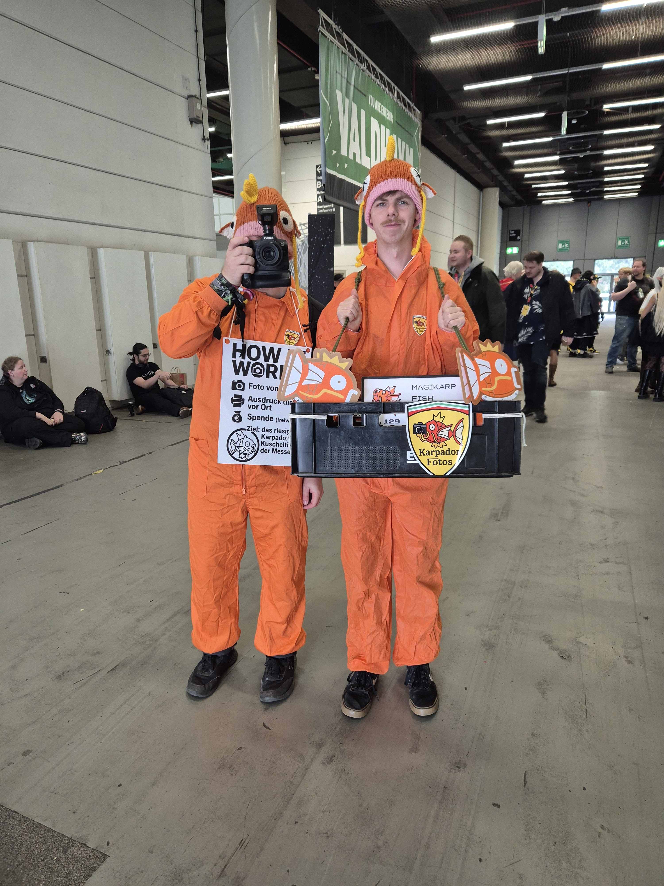
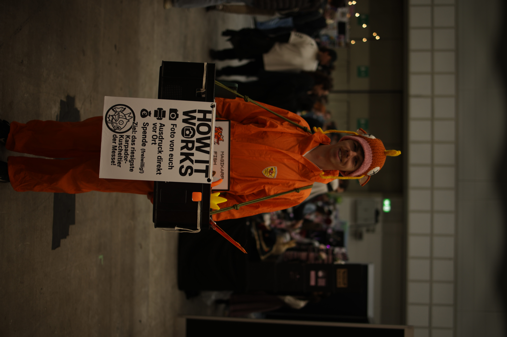
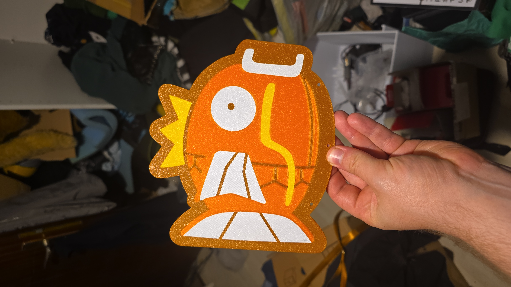
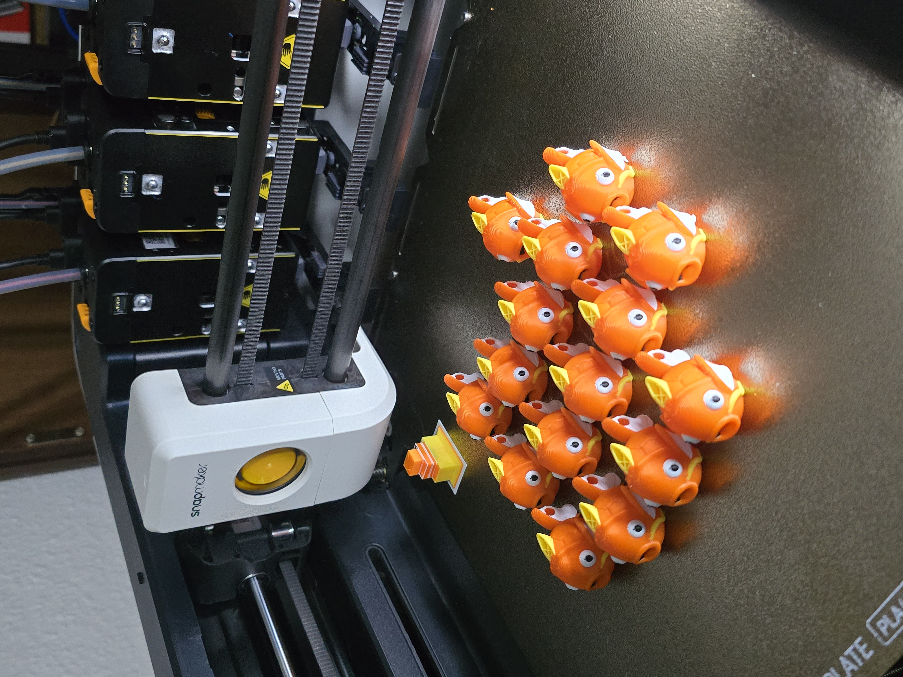
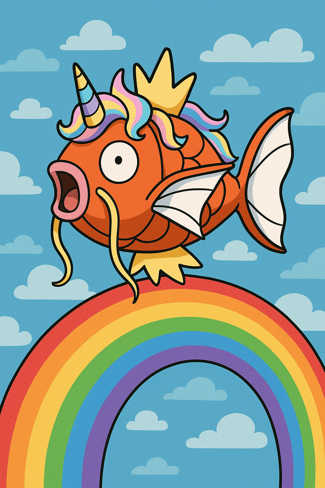

Karpador entdecken
Haltet Ausschau nach zwei knallorangen Overalls mit Magikarp-Mützen. Wir laufen durch alle Hallen.
Wir sind zwei Karpador-Cosplayer mit Bauchladen, Kamera und mobilem Drucker. Wir laufen über die Anime Convention, schießen euer Foto und drücken es euch warm aus dem Drucker in die Hand. Spende was du magst — alles fließt ins nächste Projekt.
Wir haben die digitale Version meistens noch — sag uns wann & wo du uns getroffen hast, dann schicken wir sie dir per Mail.
Schon mal von der „Sofortbildkamera 2.0" gehört? Wir sind das — nur mit Kostüm.
Haltet Ausschau nach zwei knallorangen Overalls mit Magikarp-Mützen. Wir laufen durch alle Hallen.
Pose machen, lächeln, Cosplay präsentieren. Wir kümmern uns um Licht und Perspektive.
Der Drucker im Bauchladen rattert los — nach ~60 Sekunden hältst du dein Foto in der Hand.
Komplett freiwillig. Jeder Euro fließt in unser Spendenziel — dieses Jahr: Japan!
Wo wir als Nächstes laufen, was gerade aus dem Drucker kommt, welche Cosplays uns vom Hocker gehauen haben — alles zuerst auf Instagram.
@3d.print.shop.harm →Ein paar Lieblingsmomente. Mehr in der Galerie.





Dieses Jahr sparen wir für unsere große Japanreise im November. Tokio, Osaka, Akihabara — und natürlich ein Pilgerbesuch im Pokémon Center. Jede Spende ist ein Schritt näher.
Frisch gestartet · jede Spende ist der erste Schritt nach Tokio!
Mehr erfahren →Düsseldorf · Messe · Fr–So · diese Woche!
Hamburg · Messe · vermutlich dabei